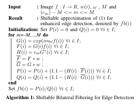
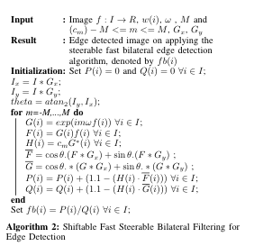
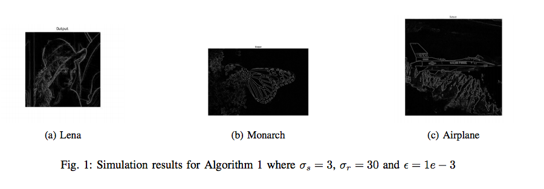
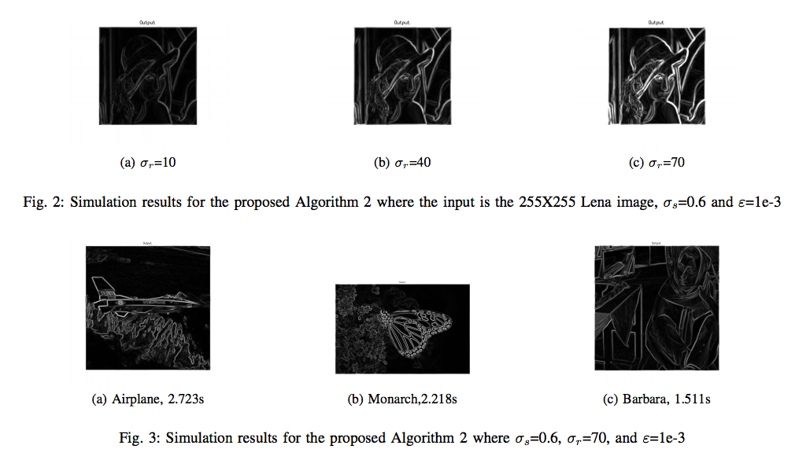

Previously related works show that the bilateral filter can be modified to an edge detector, on modifying the Gaussian domain and range kernels. Although several techniques have been used to obtain computationally fast bilateral filters, we implemented an algorithm that had a reasonable trade-off between image accuracy and computational time. The concepts of fast bilateral filters were been coupled with bilateral edge detectors to design a fast bilateral edge detector. I proposed a noise-robust and computationally efficient algorithm for steerable fast bilateral edge detection using the concepts of steerability, edge detection via bilateral filters and fast bilateral filtering using Fourier kernels. Simulation results were presented along with the peak signal to noise ratio (PSNR) for various noisy and noise-free gray-scale images.
Fast Bilateral Edge Detection
Understanding Bilateral Edge Detectors
Based on the methodology proposed by A. Jose and C. S. Seelamantula[1], an inverted Gaussian range kernel and a high-pass domain kernel has been used to design a bilateral edge detector. The inversion of the range kernel of a standard bilateral filter accentuates the dissimilarities of neighboring pixels, hence enhancing edge detection. Two conditions have been taken into account while designing such a filter, the requirement of a derivative spatial kernel that can perform edge detection and a range kernel that emphasizes dissimilar regions based on radiometric distance of pixels from the central pixel. Higher weights are provided for regions with greater pixel dissimilarity, in contrary to what the original bilateral filter was designed for. Masks such as Roberts, Laplacian, Sobel, Prewitt or LoG maybe used as the domain kernel; these depend on the pixel intensity. We apply the above in acquiring steerable fast bilateral edge detectors, as discussed in the further subsections.
$$F\sigma_r (i) = 1.1 - e^{\frac{-(|f(i-j)-f(i)|)^2}{\sigma_r^2}}$$
The modified and biased range kernel is represented by (4) where \(f(x)\) is the intensity of the pixel at x , and \(|f(i-j)-f(i)|\) is the intensity difference between the pixels.A bias of 0.1 has been introduced to prevent the range kernel from reaching a value of 0. This is done so that the effect of spatial kernel is not cancelled out at such points. Detailed comparisons of performance on using Sobel and Laplacian masks as the domain kernel, and Canny edge detectors, have been carried out in [1].
Fast Bilateral Edge Detection
It is observed that a series of Gaussian convolutions can form a bilateral filter by using shiftable functions [3,4,17]. In addition to computational efficiency, Sanjay Ghosh and Kunal N. Chaudhury proposed a fast bilateral filtering algorithm using Fourier kernels, which assures sub pixel accuracy throughout the image. The Gaussian range kernel of a bilateral filter is approximated via a shiftable Fourier basis. You can find out about their research work here.
A fast bilateral edge detector can be achieved by two modifications to the fast bilateral filtering algorithm mentioned above.
A Laplacian filter is used as the spatial kernel.
An inverted Gaussian kernel is used as the range kernel. It highlights the neighboring pixel dissimilarity.
Algorithms 1 and 2 were designed by me, under the guidance of my professor, Dr. Chandra Sekhar Seelamantula.
Algorithm 1 depicts the modified fast bilateral filter to give an edge detected image \(fb(i)\). \(w(i)\) is the Laplacian kernel and \(G^*(i)\) is the complex conjugate of \(G(i)\).

Steerable Fast Bilateral Edge Detection
Steerable Filters
Steerable filters provide the response of filters oriented at an arbitrary angle \( \theta\). Their uses range from orientation texture analysis to edge and corner detection. Ideally, a filter response in a direction orthogonal to feature boundary, is desired[14]. These filters are a linear combination of few rotated versions of itself differing by small angles, also known as basis filters. The filter response at an angle \( \theta\) is given by
$$F^\theta(x,y) = \sum_{j=1}^{N} k_j(\theta) F^{\theta_j}(x,y)$$
where \(k_j(\theta)\)is the interpolation function corresponding to the $jth$ basis filter and \(N\) is the number of basis filters in the linear sum.The interpolation functions depend on \(\theta\).
Steerable Fast Bilateral edge Detection (Proposed Algorithm)
We modify the range and domain kernels of the fast bilateral filter approximation in [7], to design a steerable fast bilateral edge detector as follows:
A steerable Gaussian kernel serves as the spatial kernel.We consider the first derivative of the standard Gaussian kernel rotated at angles \(0^\circ\) and \(90^\circ\).
For enhanced edge detection, the Gaussian range kernel in the Fast Bilateral Filtering Algorithm is inverted.Thus,neighbouring pixel dissimilarity is highlighted.
In Algorithm 2, \(G_x\) and \(G_y\) are the first derivatives of the Gaussian kernel \(w\),oriented at \(0^\circ\) and \(90^\circ\).We compute \(I_x\) and \(I_y\), the images obtained on convolution of \(I\) with \(G_x\) and \(G_y\) respectively.The approximated bilateral filter is composed of a series of Gaussian convolutions.We convolve the \(F\) and \(G\) with the Gaussian steerable filters, where \(\theta\) is the angle at which the filter is rotated, for each pixel.Both,the spatial and range kernels are normalized.

Simulation Results
Simulation results for the proposed Algorithm 1
The input is the 255X255 Lena image, \(\sigma_s=0.6\) and \(\varepsilon=1e-3\).

Simulation results for the proposed Algorithm 2
Where \(\sigma_s=0.6, \sigma_r=70,\) and \(\varepsilon=1e-3\).

Note: Our research work and submission can be viewed here. Return